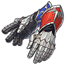
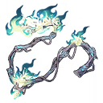

추천 광추
섬뜩한 밤
회복효율 +12% · 아군 필살기 치유
효과 자세히
아군 필살기 → 최저 HP 비율 아군 HP 10% 회복. 치유 대상 공격력 +2.4%, 최대 +12% 2턴.
세월은 흐를 뿐
HP 최대치 +18% · 치유량 +12%
효과 자세히
아군 공격 시 기록한 장착자 치유량의 36% 추가 피해, 턴당 1회.
수술 후의 대화
회복효율 +16% · 필살기 치유량 +24%
효과 자세히
필살기 이외의 치유에는 광추 치유량 증가가 적용되지 않음.
알맞은 타이밍
효저 +32% · 효과 저항 비례 치유량
효과 자세히
효저의 45%만큼 치유량 증가, 최대 +27%로 효저 60% 조건.
등가교환
턴 시작 시 동료 에너지 +16pt
효과 자세히
현재 에너지 50% 미만인 다른 아군 중 임의의 1명.
추천 유물
태양과 번개의 여전사 4 · 부러진 용골 2
- 머리
 주옵션HP부옵션속도 · HP% · 효과 저항 · 방어력%
주옵션HP부옵션속도 · HP% · 효과 저항 · 방어력% - 손

주옵션공격력부옵션속도 · HP% · 효과 저항 · 방어력% - 몸통
 주옵션치유량 보너스부옵션속도 · HP% · 효과 저항 · 방어력%
주옵션치유량 보너스부옵션속도 · HP% · 효과 저항 · 방어력% - 다리
 주옵션속도부옵션HP% · 효과 저항 · 방어력%
주옵션속도부옵션HP% · 효과 저항 · 방어력% - 구체
 주옵션HP%부옵션속도 · 효과 저항 · 방어력%
주옵션HP%부옵션속도 · 효과 저항 · 방어력% - 매듭
 주옵션에너지 회복효율부옵션속도 · HP% · 효과 저항 · 방어력%
주옵션에너지 회복효율부옵션속도 · HP% · 효과 저항 · 방어력%
이 조합을 추천하는 이유
여전사 동료 치유 → 속도 +6% 추가 · 파티 치피 +15%. 용골 효저 30%에서 치피 +10%.
가상공간을 누비는 메신저 4 · 불로인의 선주 2
- 머리
 주옵션HP부옵션속도 · HP% · 효과 저항 · 방어력%
주옵션HP부옵션속도 · HP% · 효과 저항 · 방어력% - 손
 주옵션공격력부옵션속도 · HP% · 효과 저항 · 방어력%
주옵션공격력부옵션속도 · HP% · 효과 저항 · 방어력% - 몸통
 주옵션치유량 보너스부옵션속도 · HP% · 효과 저항 · 방어력%
주옵션치유량 보너스부옵션속도 · HP% · 효과 저항 · 방어력% - 다리
 주옵션속도부옵션HP% · 효과 저항 · 방어력%
주옵션속도부옵션HP% · 효과 저항 · 방어력% - 구체
 주옵션HP%부옵션속도 · 효과 저항 · 방어력%
주옵션HP%부옵션속도 · 효과 저항 · 방어력% - 매듭

주옵션에너지 회복효율부옵션속도 · HP% · 효과 저항 · 방어력%
이 조합을 추천하는 이유
메신저 파티 대상 필살기로 가속. 선주 속도 120 이상 → 파티 공격력 +8%.
이 정도면 잘 키웠다
선택한 세팅 기준 · —는 확인된 수치 없음
파티 치유로 여전사 효과를 발동하고, 용골 조건을 맞춥니다.
| 스탯 | 추천 스탯 | 준종결 | 종결 |
|---|---|---|---|
| HP | 5000 | — | — |
| 속도 | 160+ | — | — |
| 에너지 회복효율 | 119.44%+[1]기본 100%에 5성 +15 매듭의 에너지 회복효율 19.44%p를 더한 총량입니다. | — | — |
| 효과 저항 | 30%[2]부러진 용골 발동 조건. | — | — |
세팅 기준·출처
공개 가이드에서 이 세팅의 준종결 또는 종결 수치를 확인하지 못했습니다.
필살기 치유와 함께 파티를 가속합니다.
| 스탯 | 추천 스탯 | 준종결 | 종결 |
|---|---|---|---|
| HP | 5000~5700+ | — | — |
| 속도 | 134 | 143[1]자체 계산 · 속도 변화·행동 당김 없이 혼돈의 기억 첫 웨이브 3라운드(350 행동값) 안에 5회 행동. 5 × 10000 ÷ 350보다 높아야 합니다.자체 계산 | 160 |
| 에너지 회복효율 | 119.44%+[2]기본 100%에 5성 +15 매듭의 에너지 회복효율 19.44%p를 더한 총량입니다. | — | — |
세팅 기준·출처
가이드가 종결로 병기한 143·160 가운데 이 선택은 장기 행동용 160을 목표로 합니다. 143은 자연 행동 기준이며 메신저의 파티 가속은 별도입니다.
성혼과 추천 돌파
2돌 생존 반응 대상 디버프 1회 저항 · 6돌 HP·효과 저항 증가.
1아군 HP ≤ 50% → 치유량 +20%
즉시·지속 치유에 적용.
2생존 반응 대상 디버프 1회 저항추천
휴대용 버너의 정오
3전투 스킬 +2 · 일반 공격 +1
스킬·일반 공격 레벨 상한 각각 15·10.
4생존 반응 → 대상 공격력 증가
링스 HP 최대치의 3%만큼 1턴.
5필살기·특성 +2
필살기·특성 레벨 상한 각각 15.
6생존 반응 → HP 증가 추가·효저 +30%추천
링스 HP 최대치 6%만큼 HP 증가량 추가.
추천 파티


기본 운영과 행적
피격을 원하는 아군에게 생존 반응
클라라·운리 같은 파멸 딜러에게 전투 스킬 → 지속 치유와 피격 확률 증가.
- 필살기는 전원 디버프 1개 해제. 위험한 광역 제어 전에 에너지 확보.
행적 육성 순서
필살기 → 특성 → 전투 스킬·일반 공격
- HP 증가량이 중요한 편성은 전투 스킬도 투자.
기준과 출처 · 2026-11-27
4.7 데이터 · Prydwen 장비 참고 · 자료실 편성 예시